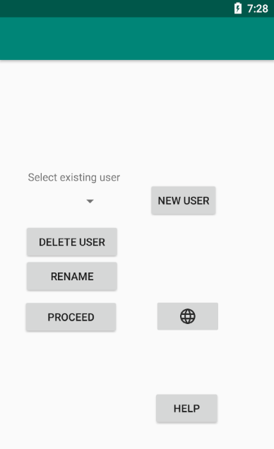
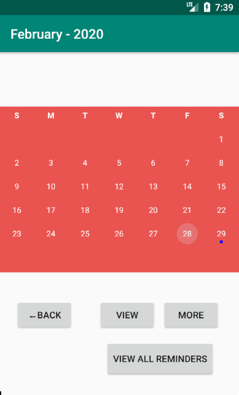
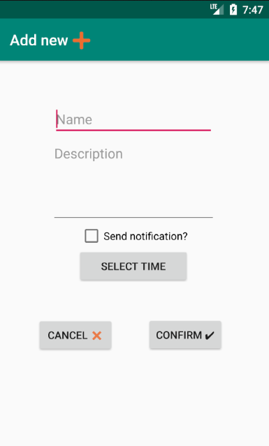
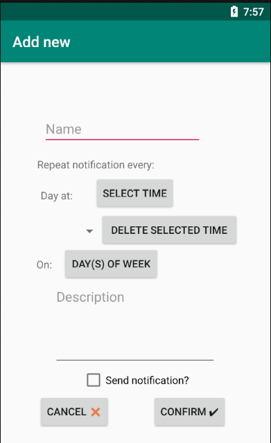
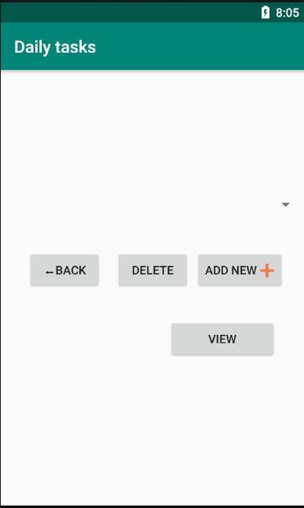
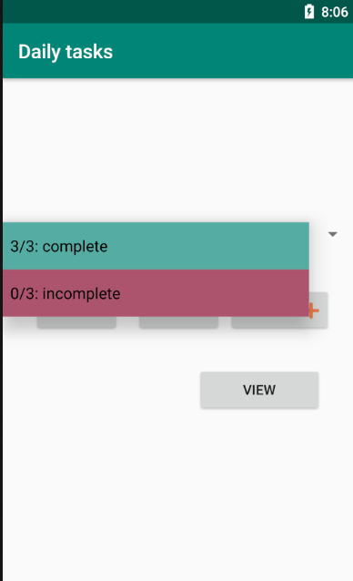
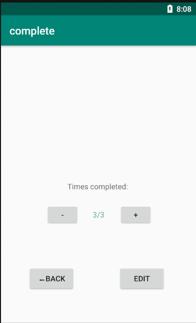
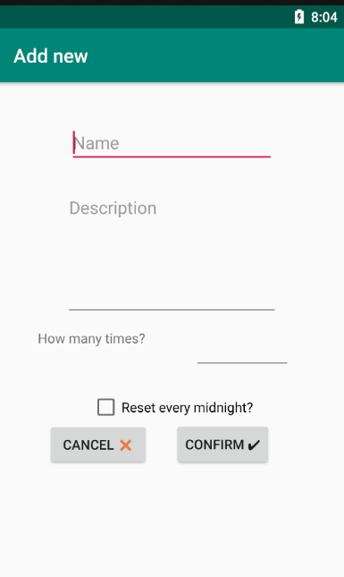

Homepage

Click NEW USER to create a new Profile.
Click 🌐 to change the language settings.
Select a Profile on the dropdown menu, then
Click RENAME to rename a user.
Click DELETE USER, to open the delete profile dialog.
Click PROCEED to select the profile on the dropdown menu, and move onto the calendar page.
Calendar

The calendar highlights dates that have scheduled reminders in blue. When a notification activates (and has set notification on), a dialog box will appear here.
Swipe left/right to scroll between months.
Click BACK to return to the homepage.
Click VIEW to select the selected date. You can then view all reminders for that date, or add a new reminder for that date. You cannot select a date that has already passed.
Click MORE to add daily tasks or repeating notifications.
Click VIEW ALL REMINDERS to view all reminders on one page.
Add new reminder
A normal reminder. It will send a notification dialog when it activates, then deletes itself.

Enter the name of your reminder in the Name field. All reminders must have names. No two reminders set on the same date can share a name.
Enter the description of your reminder in the Description field. This section is optional.
Check the Send notification checkbox if you want the reminder to give a notification box when it activates.
Select the time of the day you want your notification to set by clicking SELECT BUTTON. It defaults to midnight.
Click CONFIRM to create the reminder, or CANCEL to go back.
Repeating Notifications and Daily Tasks can be accessed by pressing the MORE button on the calendar screen.
Add repeating notification
Use this when you want a notification to activate on a regular basis. When it activates, it will automatically reschedule itself.

Enter the name of the repeating notification in the Name field. All repeating notifications must have a unique name.
Click the SELECT TIME button to add a time you want this notification to activate to a list. If no time is selected, the application will automatically add 00:00 for you.
Select a time from the dropdown menu, then click DELETE SELECTED TIME to delete the selected time from the list.
Click DAY(S) OF WEEK to select which days of the week you want this notification to activate. You must have at least one day selected.
Enter the description for the notification in the Description field. This section is optional.
Check the Send notification checkbox if you want the notification to send a notification dialog when it activates. When the notification activates, it will automatically reschedule itself.
Click CONFIRM to create the notification, or CANCEL to go back.
Daily tasks


Completed tasks are highlighted in green, and incomplete tasks are highlighted in red.
Select a task, then click VIEW to adjust progress.
View daily task

Use the - and + buttons to adjust task progress.
Click EDIT to edit the task.
Add daily task

Enter the name of the task in the Name field. All tasks must have a unique name.
Enter the description of the field in the Description field. This section is optional.
Enter the amount of times you want this task to be completed in the How many times field. Must be a positive integer.
Check the Reset every midnight box if you want the task progress to reset to zero every midnight. If you do not check this box, the task will never reset automatically.
Click CONFIRM to create the task, or CANCEL to go back.